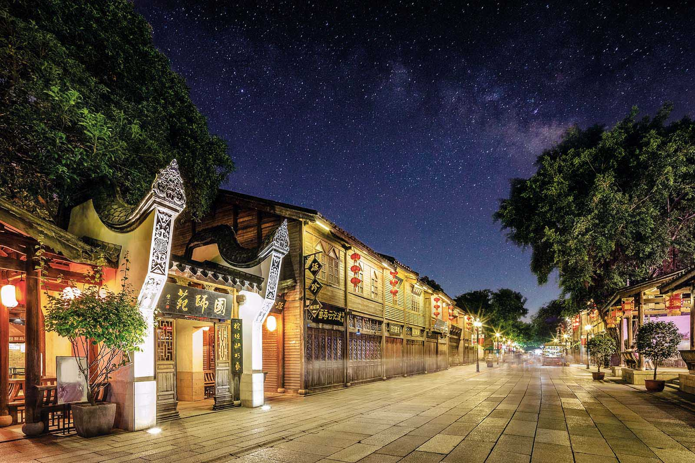

Explore Fuzhou's Charm

Sanfang Qixiang
The famed historical and cultural area of Fuzhou's Sanfang Qixiang, also known as Three Lanes and Seven Alleys, is situated in
Fuzhou City, the capital of Fujian Province in southeast China. It is regarded as one of Fuzhou's oldest and best-preserved
traditional residential neighborhoods.
Three parallel lanes (Yijin Lane, Wenru Lane, and Guanglu Lane) and seven perpendicular alleys (Yangqiao Alley, Langguan Alley,
Anmin Alley, Huang Alley, Gong Alley, Jipi Alley, and Ta Alley) that create a grid design are what distinguish Sanfang Qixiang from
other cities. Traditional courtyard residences and structures that represent the architectural styles of the Ming (1368-1644) and Qing
(1644-1912) dynasties fill the lanes and alleyways. The district has a history that extends back more than a thousand years, and
over that time it has seen Fuzhou grow and evolve. Visitors may take in the well-preserved architectural history, magnificent stone carvings,
excellent woodwork, and traditional craftsmanship while strolling around Sanfang Qixiang.
In Fuzhou, Sanfang Qixiang has grown to be a well-liked tourist attraction and cultural center, drawing tourists from both domestic and foreign
countries. It provides a window into the intricate architecture, long history, and way of life of Fuzhou. The area is also home to a number of
museums, art galleries, boutiques, teahouses, and restaurants, giving tourists the chance to learn more about the customs, food, and arts and
crafts of the region. Sanfang Qixiang, a pleasant and energetic ancient neighborhood in Fuzhou, provides a window into the city's history and a
display for the area's rich cultural legacy.
Pingtan Island
Pingtan Island, or Pingtan County, is an island county off the east coast of Fujian Province, in the East China Sea. It is located around 126
kilometers (78 miles) away from Fuzhou City and is China's largest island county.
About 370 square kilometers (143 square miles) in size, Pingtan Island is renowned for its stunning coastline landscape, sand beaches, and
abundant marine life. There are several historical and cultural attractions on the island, which has a lengthy history. Due to its advantageous
location on the maritime Silk Road, it has been inhabited since prehistoric times and has experienced the impact of several cultures.
In recent years, Pingtan Island has undergone significant development and has become a popular tourist destination. The island offers visitors
a chance to enjoy its pristine beaches, clear blue waters, and picturesque landscapes. Visitors can engage in a range of activities such as swimming,
sunbathing, surfing, and fishing. Pingtan Island is also known for its vibrant local culture and traditions. The island has a unique folk culture
that includes traditional music, dance, and performing arts. Visitors can experience the local customs and enjoy performances showcasing Pingtan's
cultural heritage.

Gu Shan
Gu Shan, a notable landmark and well-liked tourist destination in Fuzhou, is referred to by this name. Gushan Mountain, which overlooks the
Min River and provides sweeping views of the metropolis, is situated in the northeastern region of Fuzhou. Gushan Mountain is renowned for its
scenic surroundings, historical landmarks, and cultural value. It is distinguished by its rich vegetation, meandering pathways, and tranquil
environment, making it a favorite getaway for both locals and visitors looking for a break from the bustle of the city.
The White Pagoda (Bai Ta), which is perched atop Gushan Mountain, is one of its primary attractions. The White Pagoda is a well-known building
with a lengthy history. It was initially constructed in the Tang Dynasty (618-907) and has since undergone several restorations. Visitors to
the pagoda may enjoy stunning views of Fuzhou city and the surroundings thanks to its graceful architecture and advantageous placement. Gushan
Mountain is home to a variety of temples, pavilions, and historical artifacts in addition to the White Pagoda. For instance, the Wuta Tower,
sometimes referred to as the "Five Pagodas Tower," is a noteworthy piece of mountainside architecture. It has five little pagodas, each with
a distinctive design, grouped in a special arrangement.
Gushan Mountain is also well-known for its connections to literature and history. It is reported to have influenced many poets and thinkers
throughout history, leading to the production of well-known poetry and literary works that celebrate the grandeur of the mountain. Gushan
Mountain has cultural value as a result and is frequently praised as an inspiration for literature and art. In addition to its cultural and
historical significance, Gushan Mountain offers chances for outdoor leisure. Visitors may explore the mountain's picturesque locations and
take leisurely nature walks thanks to its well-maintained hiking routes. In the spring, picnics, birding, and taking in the flowering cherry
blossoms are all popular activities there.